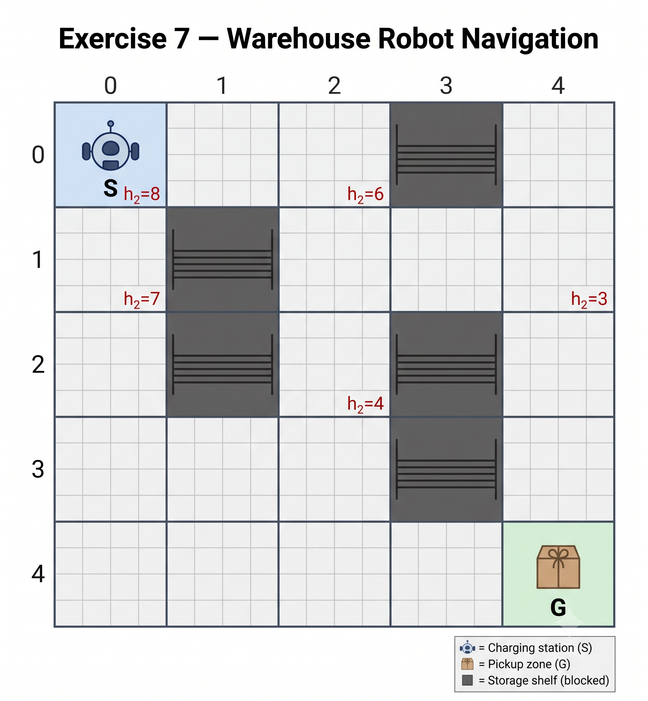
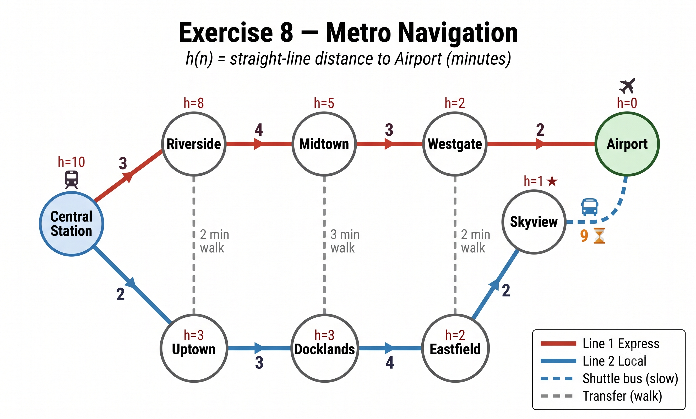

Faculty of Data Science & Artificial Intelligence, NEU
Instructor Copy| Abbr | Location | h(n) |
|---|---|---|
| PCC | Provincial Cold-Chain Center (Start) | 10 |
| PHF | Phú Hòa Ferry | 8 |
| HLB | Hưng Long Bridge | 6 |
| TAC | Tân An Canal Road | 7 |
| BMM | Bình Minh Market | 6 |
| SHC | Sông Hậu Crossing | 4 |
| MPL | Mỹ Phước Levee | 5 |
| LKD | Long Khánh Dock | 4 |
| TTE | Trung Thành Elevated Road | 3 |
| NBD | Ngã Ba Đình Crossroads | 2 |
| RCC | Remote Commune Clinic (Goal) | 0 |
PCC (h=10)
/ | \
2/ 5| \3
/ | \
PHF(8) HLB(6) TAC(7)
/ \ / \ / \
3 6 2 4 3 7
/ \ / \/ \
BMM(6) SHC(4) MPL(5) LKD(4)
\ / \ \ /
4 2 5 3 2
\ / \ \ /
TTE(3) NBD(2)<──┘
\ /
5 3
\ /
RCC(0)
Tie-breaking: equal f → smaller g; still tied → alphabetical order of location name.
| Step | Expanded | g | h | f | Open list after expansion — format: Node[g, h, f] |
|---|---|---|---|---|---|
| 1 | PCC | 0 | 10 | 10 | PHF[2,8,10], TAC[3,7,10], HLB[5,6,11] |
| 2 | PHF (g=2 < TAC g=3) | 2 | 8 | 10 | TAC[3,7,10], BMM[5,6,11], HLB[5,6,11], SHC[8,4,12] |
| 3 | TAC | 3 | 7 | 10 | BMM[5,6,11], HLB[5,6,11], MPL[6,5,11], SHC[8,4,12], LKD[10,4,14] |
| 4 | BMM (g=5=HLB, B<H) | 5 | 6 | 11 | HLB[5,6,11], MPL[6,5,11], SHC[8,4,12], TTE[9,3,12], LKD[10,4,14] |
| 5 | HLB (g=5 < MPL g=6) | 5 | 6 | 11 | MPL[6,5,11], SHC[7,4,11]†, TTE[9,3,12], LKD[10,4,14] |
| 6 | MPL (g=6 < SHC g=7) | 6 | 5 | 11 | SHC[7,4,11], NBD[9,2,11], TTE[9,3,12], LKD[10,4,14] |
| 7 | SHC (g=7 < NBD g=9) | 7 | 4 | 11 | NBD[9,2,11], TTE[9,3,12], LKD[10,4,14] |
| 8 | NBD | 9 | 2 | 11 | TTE[9,3,12], RCC[12,0,12], LKD[10,4,14] |
| 9 | TTE (g=9 < RCC g=12) | 9 | 3 | 12 | RCC[12,0,12], LKD[10,4,14] |
| 10 | RCC — GOAL | 12 | 0 | 12 | — |
† Step 5: HLB→SHC gives g=7 < current g=8 → SHC updated from [8,4,12] to [7,4,11].
Greedy always expands the node with the smallest h, ignoring g entirely.
| Step | Expanded | h | Neighbors added to Open |
|---|---|---|---|
| 1 | PCC | 10 | HLB (h=6), TAC (h=7), PHF (h=8) |
| 2 | HLB | 6 | SHC (h=4), MPL (h=5) |
| 3 | SHC | 4 | NBD (h=2), TTE (h=3) |
| 4 | NBD | 2 | RCC (h=0) |
| 5 | RCC — GOAL | 0 | — |
No. A* found PCC → TAC → MPL → NBD → RCC (12 h); Greedy found PCC → HLB → SHC → NBD → RCC (15 h). A* is faster by 3 hours.
Greedy chose HLB (h=6) over TAC (h=7) because HLB looks closer by heuristic. However, the edge PCC→HLB costs 5 h while PCC→TAC costs only 3 h — Greedy never counts the cost already paid.
h*(n) = true shortest path cost from n to RCC:
| Node | Key paths to RCC | h*(n) | h(n) | h ≤ h*? |
|---|---|---|---|---|
| PCC | PCC→TAC→MPL→NBD→RCC = 3+3+3+3 | 12 | 10 | ✓ |
| PHF | PHF→BMM→TTE→RCC = 3+4+5 = 12 PHF→SHC→TTE→RCC = 6+2+5 = 13 | 12 | 8 | ✓ |
| HLB | HLB→SHC→TTE→RCC = 2+2+5 = 9 HLB→MPL→NBD→RCC = 4+3+3 = 10 | 9 | 6 | ✓ |
| SHC | SHC→TTE→RCC = 2+5 = 7 SHC→NBD→RCC = 5+3 = 8 | 7 | 4 | ✓ |
| MPL | MPL→NBD→RCC = 3+3 = 6 | 6 | 5 | ✓ |
All nodes satisfy h(n) ≤ h*(n) → heuristic is admissible.
The optimal A* route PCC → TAC → MPL → NBD → RCC does not pass through PHF at all. Removing PHF (and its edges PHF→BMM, PHF→SHC) leaves the optimal path completely unaffected — A* still returns the same 12-hour route.

(r, c) where:r = row — 0 at the top, 4 at the bottomc = column — 0 at the left, 4 at the rightBlocked: (0,3), (1,1), (2,1), (2,3), (3,3)
| Cell (r, c) | h1 = √[(r−4)² + (c−4)²] | h2 = |r−4| + |c−4| |
|---|---|---|
| (0, 0) = S | √(16+16) = √32 ≈ 5.66 | 4+4 = 8 |
| (0, 2) | √(16+4) = √20 ≈ 4.47 | 4+2 = 6 |
| (1, 0) | √(9+16) = √25 = 5.00 | 3+4 = 7 |
| (2, 2) | √(4+4) = √8 ≈ 2.83 | 2+2 = 4 |
| (1, 4) | √(9+0) = 3.00 | 3+0 = 3 |
Proof sketch: the straight line is the shortest possible path between two points, so the Euclidean distance is a lower bound on any axis-aligned (Manhattan) path — by the triangle inequality applied to horizontal + vertical steps.
BFS backward from G=(4,4) ignoring blocked cells gives the true shortest paths h*(n):
| Cell | h1 | h2 | h*(n) | h1 ≤ h*? | h2 ≤ h*? |
|---|---|---|---|---|---|
| (0,0) | 5.66 | 8 | 8 | ✓ | ✓ |
| (0,2) | 4.47 | 6 | 6 | ✓ | ✓ |
| (1,0) | 5.00 | 7 | 7 | ✓ | ✓ |
| (2,2) | 2.83 | 4 | 4 | ✓ | ✓ |
| (1,4) | 3.00 | 3 | 3 | ✓ | ✓ |
Note: h2 equals h* exactly for all five cells — the obstacles happen not to force any detour on these particular paths.
Tie-breaking: equal f → smaller h2; still tied → smaller (r, c) lexicographically.
| Step | Expanded | g | h2 | f | Open list after expansion — format: (r,c)[g, h, f] |
|---|---|---|---|---|---|
| 1 | (0,0) | 0 | 8 | 8 | (0,1)[1,7,8], (1,0)[1,7,8] |
| 2 | (0,1) (h same, (0,1)<(1,0)) | 1 | 7 | 8 | (1,0)[1,7,8], (0,2)[2,6,8] |
| 3 | (0,2) (h=6 < (1,0) h=7) | 2 | 6 | 8 | (1,0)[1,7,8], (1,2)[3,5,8] |
| 4 | (1,2) (h=5 < (1,0) h=7) | 3 | 5 | 8 | (1,0)[1,7,8], (1,3)[4,4,8], (2,2)[4,4,8] |
| 5 | (1,3) (h same, (1,3)<(2,2)) | 4 | 4 | 8 | (1,0)[1,7,8], (2,2)[4,4,8], (1,4)[5,3,8] |
| 6 | (1,4) (h=3 smallest) | 5 | 3 | 8 | (1,0)[1,7,8], (2,2)[4,4,8], (2,4)[6,2,8], (0,4)[6,4,10] |
| 7 | (2,4) (h=2 smallest) | 6 | 2 | 8 | (1,0)[1,7,8], (2,2)[4,4,8], (3,4)[7,1,8], (0,4)[6,4,10] |
| 8 | (3,4) (h=1 smallest) | 7 | 1 | 8 | (1,0)[1,7,8], (2,2)[4,4,8], (4,4)[8,0,8], (0,4)[6,4,10] |
| 9 | (4,4) = G | 8 | 0 | 8 | — |
No. h2(2,4) = |2−4| + |4−4| = 2. Manhattan distance is computed purely from coordinates — it ignores obstacles entirely.
With (3,4) blocked, (2,4)'s only accessible neighbor is (1,4). The robot must take a long detour:
(2,4)→(1,4)→(1,3)→(1,2)→(2,2)→(3,2)→(4,2)→(4,3)→(4,4) → 8 steps
h*(2,4) = 8. Since h2(2,4) = 2 ≤ 8, h2 remains admissible.
h2 = 2 but h* = 8 — the heuristic underestimates by 6 steps. Heavy obstacles create large gaps between h2 and h*, causing A* to explore many more nodes. Admissibility is preserved; search efficiency degrades.

Tie-breaking: equal f → smaller h; still tied → alphabetical order.
| Step | Expanded | g | h | f | Open list after expansion — format: Name[g, h, f] |
|---|---|---|---|---|---|
| 1 | Ce | 0 | 10 | 10 | Up[2,3,5], Ri[3,8,11] |
| 2 | Up | 2 | 3 | 5 | Do[5,3,8], Ri[3,8,11] |
| 3 | Do | 5 | 3 | 8 | Ri[3,8,11], Ea[9,2,11] |
| 4 | Ri (g=3 < Ea g=9) | 3 | 8 | 11 | Ea[9,2,11], Mi[7,5,12] |
| 5 | Ea | 9 | 2 | 11 | Mi[7,5,12], Sk[11,1,12] |
| 6 | Sk (h=1 < Mi h=5) | 11 | 1 | 12 | Mi[7,5,12], G[20,0,20] |
| 7 | Mi | 7 | 5 | 12 | We[10,2,12], G[20,0,20] |
| 8 | We (f=12 < G f=20) | 10 | 2 | 12 | G[12,0,12]† |
| 9 | G = Airport | 12 | 0 | 12 | — |
† Step 8: We→Airport g=12 < current g=20 → Airport updated from [20,0,20] to [12,0,12].
| Step | Expanded | h | Next choice |
|---|---|---|---|
| 1 | Ce | 10 | Up (h=3), Ri (h=8) → choose Up |
| 2 | Up | 3 | Do (h=3) → choose Do |
| 3 | Do | 3 | Ea (h=2) → choose Ea |
| 4 | Ea | 2 | Sk (h=1) → choose Sk |
| 5 | Sk | 1 | G (h=0) → choose G |
| 6 | G = Airport | 0 | — |
A* and Greedy find different routes. A* is faster by 8 minutes (12 min vs 20 min).
At step 1, Greedy sees Ce's neighbors: Riverside (h=8) vs Uptown (h=3). It picks Uptown because h=3 looks very close. But Uptown's only outgoing path is the Blue Line, which ends with a 9-minute shuttle from Skyview. True h*(Uptown) = 18 minutes — far from h=3.
The heuristic is misleading at Central Station: Greedy commits to a branch that looks promising locally but has already "locked in" a slow final leg it cannot escape. It never looks back at accumulated cost.
When A* expands Skyview (step 6, g=11), it adds Airport at g=11+9=20, f=20. But Midtown is still in Open with f=12. A* expands Midtown first, then Westgate, which updates Airport to g=12, f=12.
The key: f = g + h. g(Skyview)=11 reflects the 11 minutes already spent on the Blue Line. A* balances past cost against future estimate — it refuses to commit until the full picture (g + h) is cheapest.
| Station | Best path to Airport | h*(n) | h(n) | h ≤ h*? |
|---|---|---|---|---|
| Uptown | Up→Do→Ea→Sk→G = 3+4+2+9 | 18 | 3 | ✓ |
| Skyview | Sk→G = 9 | 9 | 1 | ✓ |
| Midtown | Mi→We→G = 3+2 | 5 | 5 | ✓ (tight) |
Skyview: h=1, h*=9 → underestimates by 8 minutes. This is not an admissibility violation — admissibility only forbids overestimating (h > h*). Underestimating is always allowed.
The Skyview example reveals the distinction:
A loose heuristic (h=1 vs h*=9) still leads to the correct answer but causes A* to explore the Skyview branch before ruling it out (step 6). A tight h(Sk)≈9 would make f≈20 from the start, and A* would skip Skyview entirely.